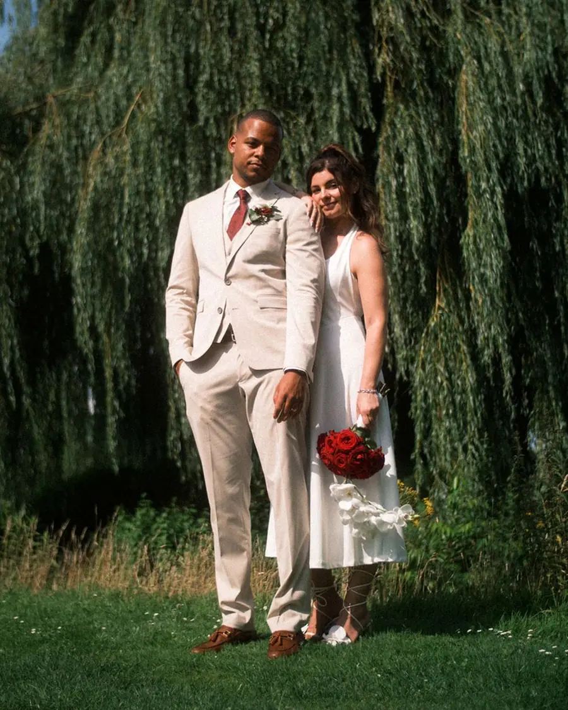

Hochzeitsfilme mit euren Stimmen
Warum unsere Brautpaare regelmäßig weinen, wenn sie ihren Film zum ersten Mal sehen.
Weil sie ihren Hochzeitstag plötzlich noch einmal erleben – und Dinge sehen, die sie an diesem Tag selbst gar nicht mitbekommen haben.
Monate der Vorbereitung. Tausende Entscheidungen. Und dann rast der Tag in wenigen Stunden an euch vorbei.
…siehst du nicht, wie nervös dein Partner im Nebenzimmer die Krawatte richtet.
…siehst du nicht, wie eure Freunde auf der Terrasse lachen und auf euch anstoßen.
…seid ihr so im Moment, dass ihr die Blicke eurer Eltern im Hintergrund gar nicht wahrnehmen könnt.
Am Abend eurer Hochzeit um 23:30 Uhr werdet ihr euch ansehen und fragen: „Wo ist die Zeit geblieben?“
Ein guter Hochzeitsfilm ist eure zweite Perspektive. Er schenkt euch all die emotionalen und versteckten Momente, die ihr an diesem Tag nicht sehen werdet.
Euren Termin prüfenEin Foto zeigt, wie es aussah.
Fotos sind unverzichtbar. Sie hängen an der Wand und stehen im Rahmen. Aber ein Foto ist stumm.
- Es zeigt dir nicht, wie die Stimme deines Partners leicht gezittert hat, als das Eheversprechen kam.
- Es zeigt dir nicht das herzhafte Lachen deines besten Freundes bei der Rede.
- Es zeigt dir nicht die Bewegung, die Musik, die Akustik und die echte Atmosphäre eurer Feier.
Ein Film lässt dich wieder hören, wie es sich angefühlt hat.
Schaut selbst.
Die Filme liegen auf YouTube. Die Vorschaubilder werden von dort geladen; der Film selbst startet erst mit eurem Klick. Mehr dazu
Ihr müsst nicht schauspielern. Ihr müsst einfach nur verheiratet werden.
Die besten Momente entstehen, wenn ihr komplett vergesst, dass überhaupt eine Kamera in der Nähe ist. Wir bewegen uns im Hintergrund. Unauffällig, ruhig, wie Gäste mit einer Kamera.
Ihr sollt euren Tag genießen, mit euren Freunden feiern und eure Zeit nicht mit Regieanweisungen verschwenden – außer ihr möchtet das natürlich. Wir passen uns an euch an, nicht ihr an uns.
Bilder gewinnen mit jedem Jahr an Wert. Stimmen erst recht.
-
5Jahre
In fünf Jahren schaut ihr euren Film an einem verregneten Sonntag auf dem Sofa an und seid sofort wieder zurück an diesem Tag.
-
10Jahre
In zehn Jahren zeigt ihr ihn vielleicht euren Kindern, die sehen wollen, wie Mama und Papa damals gefeiert haben.
-
20Jahre
Und in zwanzig Jahren werdet ihr dankbar für jede Sekunde sein, auf der ihr die Stimmen und das Lachen der Menschen hört, die diesen Tag mit euch gefeiert haben. Auch von euren Liebsten, die vielleicht nicht mehr da sein können.

Hi,
wir sind Nata & Nils.
Nils filmt. Nata fotografiert, wenn ihr das wollt und noch niemanden dafür habt. Wir kommen aus Lohne bei Vechta und machen 24 Hochzeiten im Jahr. Mehr nicht. Weil wir für jeden Film die Zeit haben wollen, die ihr auch in euren Tag gesteckt habt.
Am Hochzeitstag werdet ihr uns kaum bemerken. Ihr lacht, tanzt, umarmt eure Leute, und wir sammeln die Momente ein, die ihr später nie wieder hergeben wollt.
Und am Ende ist das nicht unser Film. Das ist eure Geschichte. Wir passen nur drauf auf.
Mehr nicht.
So einfach läuft es ab.
- 01
Verfügbarkeit prüfen
Schickt uns kurz eure Eckdaten. Wir antworten innerhalb von 24 Stunden.
- 02
Kennenlernen
Wir quatschen ganz entspannt per Videocall oder bei einem Kaffee.
- 03
Euren Tag genießen
Am Hochzeitstag begleiten wir euch unsichtbar.
- 04
Gänsehaut erleben
Ihr erhaltet euren fertigen Film und durchlebt eure Hochzeit noch einmal.
Sollen wir prüfen, ob euer Termin noch frei ist?
Tragt einfach eure Daten ein. Wir melden uns umgehend bei euch mit allen Infos und schauen, ob wir euren Tag begleiten können.
Danke.
Wir schauen jetzt, ob euer Termin noch frei ist.
Einer von uns meldet sich innerhalb von 24 Stunden persönlich bei euch.
Bis dahin: Schaut euch in Ruhe den Film von Pauline & Niklas an.
Oder direkt: +49 151 5731 2699 · info@frames-studio.de